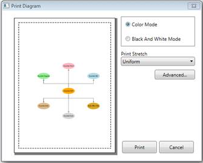

This feature enables you to print a copy of the diagram page, with or without using Print Dialog Box. This feature comes with two functionalities:
1. Printing a diagram using Print Dialog and Print Preview, and
2. Printing a diagram without using Print Dialog.
Use Case Scenarios
To print the diagram page, you can use this feature as it enables printing with different functionalities.
Tables for Properties, Methods and Events
Properties
Table 74: Properties Table for PrintParameters
|
Property |
Description |
Type |
Value It Accepts |
Default Values |
Any other dependencies/ sub properties associated |
|
ShowDialog |
Gets or sets the Print Dialog to show or not. |
CLR property |
Bool (true/false) |
True |
No |
|
PrintStretch |
Gets or sets the page stretch for printing the document. |
CLR property
|
Stretch.Fill, Stretch.None, Stretch.Uniform, Stretch.UniformToFill |
- |
No |
Methods
Table 75: Methods Table
|
Method |
Description |
Parameters |
Return Type |
Reference links |
|
|
Prints the diagram page using Print Dialog Box and Print Preview |
void |
void |
No |
|
|
Prints the diagram page without using Print Dialog Box and Print Preview |
PrintParameters |
void |
No |
Sample Link
To view the sample for this feature:
1. Open the WPF Sample Browser from the Dashboard.
2. Navigate to Diagram -> Static Diagram ->Export Demo.
Adding Printing Enhancements for Diagram Page to an Application
This feature enables you to print a copy of diagram though:
· PrintPeview,
· Without PrintDialog (though code behind)
Print Preview
Diagram can be printed though PrintPreview using following code snippet:
· Through Code behind.
|
[C#] DiagramView diagramView = new DiagramView(); diagramView.Print(); |
|
[VB] Dim diagramView As New DiagramView() diagramView.Print() |
The following custom options can be customized using PrintPreview.
· Print Preview—To view the page before printing
· Different modes—To select printing such as Color, and Black and White
· Stretch—To adjust the fit of the image on the page

Figure 165: Print and PrintPreview Dialog Box
Printing a Diagram without PrintDialog Box
Diagram can be printed without using PrintDialog or PrintPreview, and by sending PrintPreview as an argument for printing as shown blow:
Print without dialog box:
|
[C#] DiagramView diagramView = new DiagramView(); PrintParameters p = new PrintParameters(); p.ShowDialog = false; p.PrintStretch = Stretch.Fill; diagramView.Print(p);
|
|
[VB] Dim diagramView As New DiagramView() Dim p As New PrintParameters() p.ShowDialog = False p.PrintStretch = Stretch.Fill diagramView.Print(p)
|
 Support to Print the Diagram Shapes with
Effects
Support to Print the Diagram Shapes with
Effects